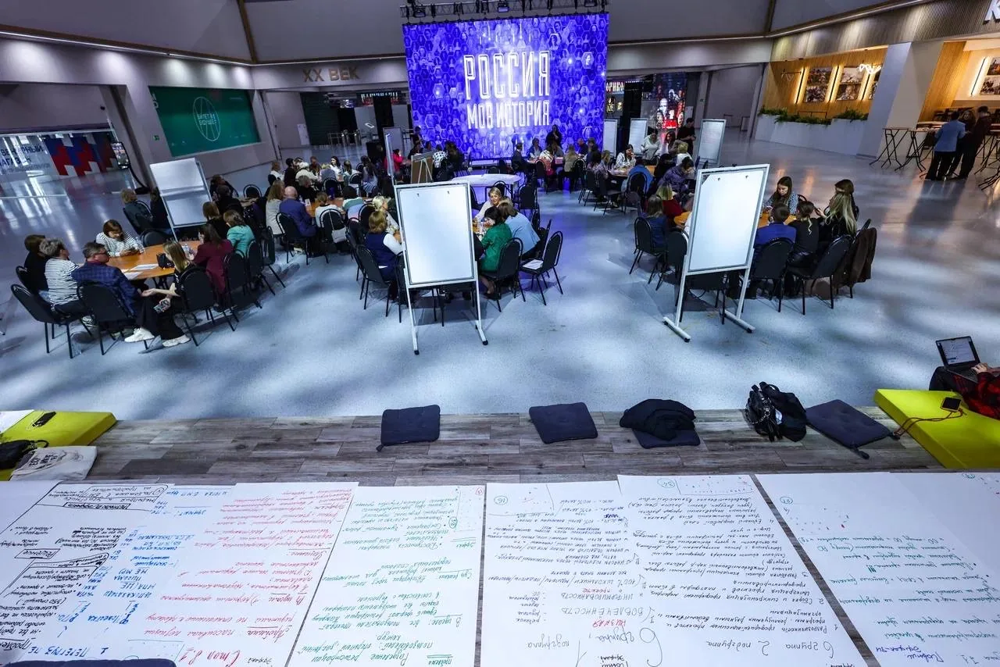
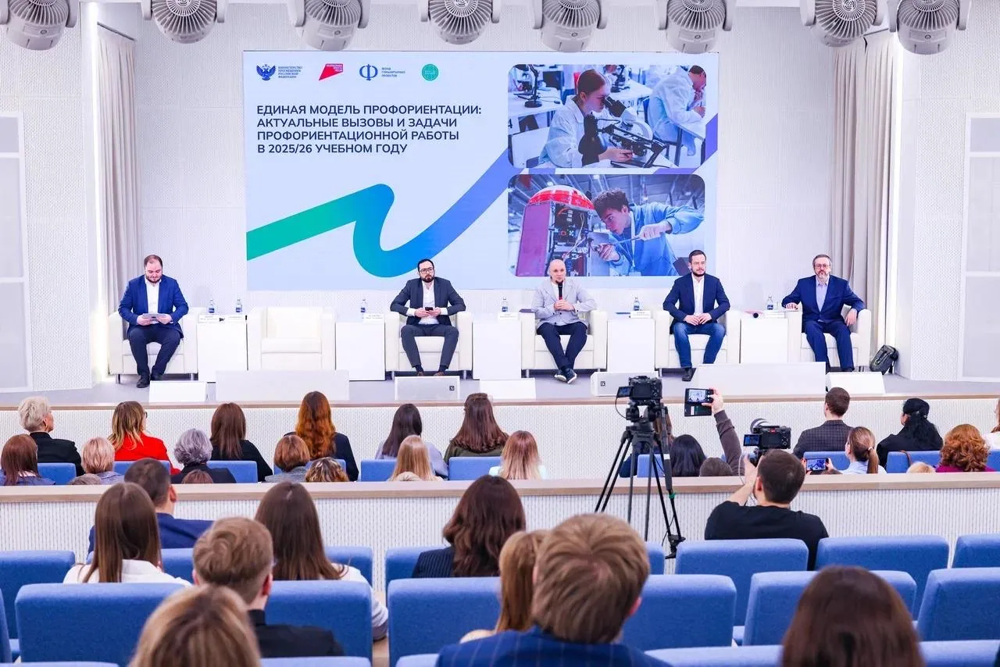
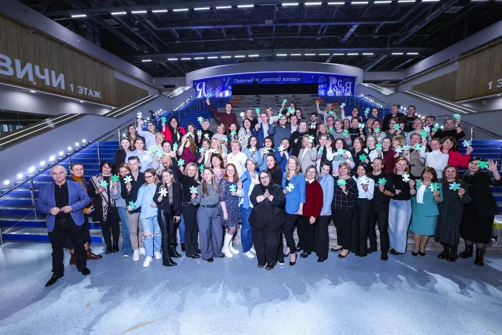
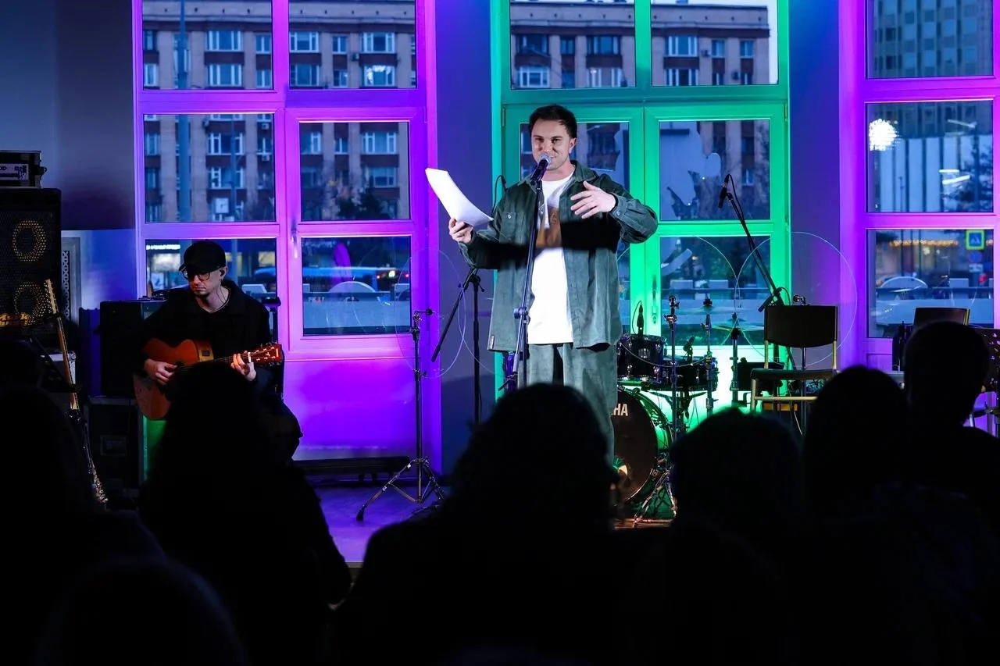
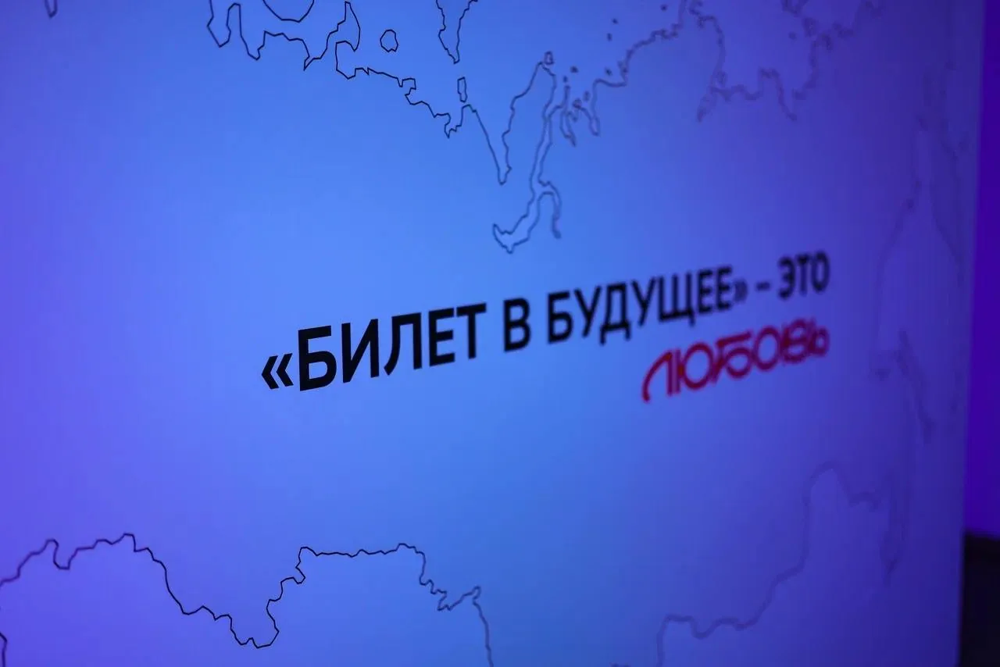
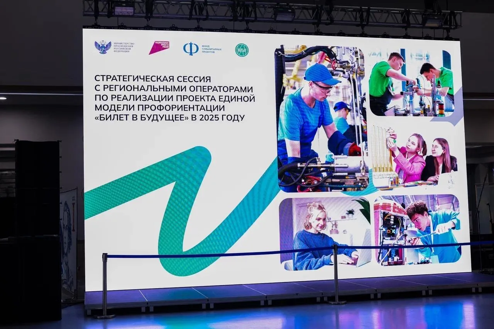

ДНЕВНАЯ ПРОГРАММА
Стратегическая сессия
Павильон «Россия — Моя история». Пленарная часть, работа в группах, дискуссии и совместная работа региональных операторов Единой модели профориентации «Билет в будущее».
БИЛЕТ В БУДУЩЕЕ / 2025
Региональные операторы со всей России. Два пространства. Один проект, в котором важна каждая минута.

Федеральный масштаб требует другой точности. Региональные операторы проекта со всей страны, деловая программа, несколько форматов и площадок. Наша задача — собрать всё это в единый сценарий, где каждый участник понимает свою роль, а программа работает как одно целое.


ДНЕВНАЯ ПРОГРАММА
Павильон «Россия — Моя история». Пленарная часть, работа в группах, дискуссии и совместная работа региональных операторов Единой модели профориентации «Билет в будущее».

ВЕЧЕРНЯЯ ПРОГРАММА
Арт-холл «Президент». После насыщенной рабочей программы — отдельное пространство для живого общения и творческой части вечера.
Тайминг · логистика · регистрация · работа площадки · техническое обеспечение · сценарий · работа с участниками · переходы между блоками программы.
Каждая деталь и каждая минута должны быть предусмотрены заранее.05 / В ДВИЖЕНИИ
Пленарные дискуссии, работа в группах и живая коммуникация участников — без декоративной постановки, только реальный ритм площадки.



07 / РЕЗУЛЬТАТ
Самое ценное в таких проектах — возможность быть частью чего-то действительно большого и важного. И увидеть, как месяцы подготовки превращаются в один точный, живой день.
«Когда всё получилось и тебе говорят, что получилось отлично — наконец выдыхаешь. И очень сильно улыбаешься».
NEXT CASE
АВТОМИР × HAVAL